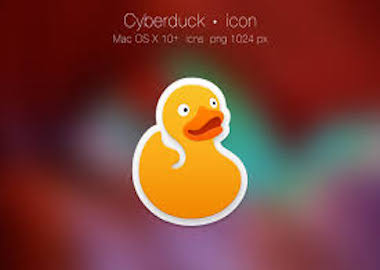

~WinSCP~
WinSCP is one of the most powerful and easy to use FTP client for Windows users. It feels like there are too many things on the user interface, but it is actually quite easy to learn. On your left, you have the files on your computer and on the right, you see the files on your server. Just click on a file to download, upload, or edit it. For advanced users, WinSCP has all the features that you would need from a powerful FTP client. It supports SFTP, SSH, and of course the plain old FTP. Handling files and assigning default editors is quite easy with WinSCP. Some pros of WinSCP is that there is advanced user support for FTP, SFTP, and SSH. There is a language switcher in which the default is English. There is an integrated text editor with a drag and drop support. It allows a master password for enhanced security. Foreground transfer can move to the background transfer queue. There is WebDAV support. There are scripting and task automation. And last but not least there is no default installation of adware. Some cons of WinSCP is that you cannot toggle between 2 great interfaces (must change preferences) and there is no way to edit keyboard shortcuts. But overall WinSCP is one of the most powerful and affordable FTP client solutions for Windows users.
~Cyberduck~
Cyberduck is a free FTP client designed for both Windows and Mac. In fact, unlike most cross-platform FTP client solutions, Cyberduck integrates seamlessly with your native Mac environment, making it one of the best Mac FTP clients available. It even supports Mac features such as storing login credentials in the keychain and locating files in the Finder. Some pros of Cyberduck is that there is a simple interface for beginners, it allows for remote file editing, it works with several external code editors, you can open files and edit both text and binary files with a click of a button, there is a wide range of protocols including FTP, SFTP, and WebDAV; there are advanced SSH functionality and bookmarking capabilities, there is client-side encryption, it supports API connections with cloud drives like Google Drive and Dropbox, as well as there are multiple languages. Some cons of Cyberduck are it tends to run slower than other FTP clients, there is no portable version and if you download from anywhere other than the official website it can come with adware. Overall although Cyberduck works for both Windows and Mac users, this option is touted as one of the best for Mac users, as there are better Windows options available. That said, Cyberduck is an inexpensive solution that will get the job done whether you use Windows or Mac.